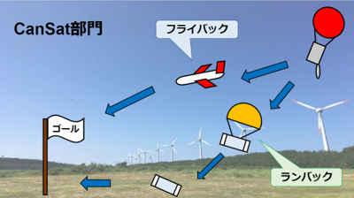

About Cansat
CanSatとは
CanSatまたは缶サットはCan-Satelliteの略で、
今後の宇宙開発を担う学生を育てるためのプログラムとして様々な大学及び高専で活動が行われている。
カムバックコンペティションと呼ばれるCanSatの競技では機体を空中から投下させ、外部からの操作なしの自動制御でゴール地点を目指す。
Can-Satteliteという名前から地球及びその他の惑星や衛星を周回する人工衛星をイメージされることが多いが、CanSatのほとんどは地上を走行する小型探査機である。

日本国内において大学生が参加するCanSatの大会は能代宇宙イベントと種子島ロケットコンテストの2つが主なCanSatの大会である。
CanSatにはランバックとフライバックの2種類の部門があり、ランバックはパラシュートで降下後、地上を走行して目標地点を目指す。これに対し、フライバックはパラセイルや飛行機などで降下しながら目標地点を目指すといった違いがあるが、それぞれの部門の最終的な目標は目標地点0mでのゴールである。
新潟大学のCanSatプロジェクトはランバック、フライバックの両方のチームを有しており、
それぞれのチームで開発を進めている。これに加えて、NiCsにはロケット部門があり、ハイブリットロケットの開発、設計を行っている。CanSatプロジェクトでロケットを開発している団体は少なく、新潟大学CanSatプロジェクトは学生主体でロケットの開発ができる数少ない大学の１つである。
さらに、NiCsは新潟大学工学力教育センターのものづくりプロジェクトの一環であり、このプロジェクトでの活動を講義として取り扱っている。毎月一度のレポート提出と月例報告会での評価から単位を得ることもでき、モチベーションを持ちながら活動ができる。
ものづくりプロジェクトの詳細については新潟大学工学力教育センターホームページよりご確認ください。